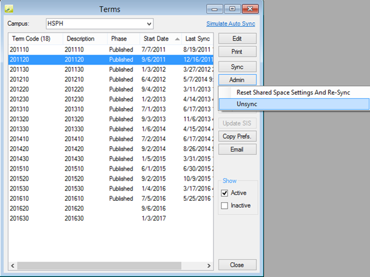

When managing terms, users may experience system timeout (after ~30 minutes) or slowness when they click the Unsync button.

The log file of the database grows exponentially while the un-synch process is running and an unusually high number (millions) of records generate in the tblcampuscourse and tblcampuscoursedates tables.
This issue is due to old data from previous versions of the EMS auto-sync service. The workaround is to clean up this old data, by truncating the table as follows: